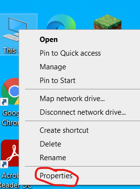
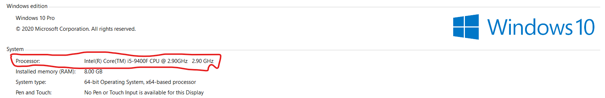

Processor(CPU)


Processor or the CPU has the most important job compared to all other parts of the computer. It processes all the stuff done on the computer or any device like loading web page, saving
some data, opening gallery, editing videos, coding and programming, playing games, etc. Simply it’s the processing unit of a device. Every processor has their own speed which is measured in
Giga Hertz in short GHz. The most common companies known for making processors are Intel and Ryzen. Mostly office laptops and computers have Intel Pentium or Intel I3 which is around
2.5 GHz. Costly Good company Laptops and computers like Apple, Lenovo, HP and ASUS have Intel I5 or Intel I7 which is around 4.7 GHz, ASUS also has Ryzen Processors. Gaming laptops and
Computers have Intel I9 or AMD Ryzen 9. The fastest Processor is Intel Core I9 10900K which is up to 5.3 GHz.
How to find your computer’s processor:-
There will be sticker Like one of these

OR
Right click on your ‘This PC’ on the homepage and click on properties

And this window will open
